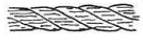
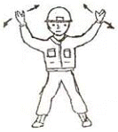

천장크레인운전기능사 (2008-03-30 기출문제)
1과목: 임의 구분
1. 천장크레인의 구조에 해당 되지 않는 것은?
- 거더는 동, 정, 상, 하 수평의 각 하중에 견디도록 리머 볼트로 견고하게 체결되어 있다.
- 새들
- 권상장치
- 속도감응 조향장치
(정답률: 60%)

2. 리미트 스위치에 관한 설명 중 틀린 것은?
- 동작이 확실한 것을 사용해야 한다.
- 횡행용 리미트 스위치는 충격에 견딜 수 있는 것이 좋다.
- 옥외용은 방수가 되는 것이 좋다.
- 필요에 따라 운전자가 임의로 조종 사용해도 좋다.
(정답률: 77%)
3. 유압브레이크에서 공기가 차면 어떤 현상이 일어나는가?
- 권상의 경우 상·하 동작시 급작 정지한다.
- 주행의 경우 정지시켜도 밀림현상이 생긴다.
- 주행의 경우 기동불능 현상이 생긴다.
- 권상의 경우 기동불능 현상이 생긴다.
(정답률: 89%)
4. 천장크레인에서 정격하중의 의미를 가장 잘 설명한 것은?
- 크레인이 들어 올릴 수 있는 최대 하중
- 크레인이 평상시 주로 많이 취급하는 하중
- 달기기구의 무게를 제외한 안전 작업 하중
- 달기기구의 무게를 포함한 안전 작업 하중
(정답률: 61%)
5. 천장크레인의 드럼(drum)에서 와이어로프를 최대로 풀었을 때 드럼에 남는 로프의 한도는?
- 최소 1바퀴 이상
- 최소 2바퀴 이상
- 최소 5바퀴 이상
- 최소 8바퀴 이상
(정답률: 81%)
6. 주행차륜의 각 부위에 대한 마모 한도로 옳은 것은?
- 차륜직경의 마모 : 원칫수의 10%
- 플랜지의 두께 : 원칫수의 50%
- 구동차륜의 좌우 직경차 : 원칫수의 15%
- 플랜지의 변형 : 수직에서 30˚
(정답률: 57%)
7. 천장크레인의 주행레일에서 스팬이 10m 이하인 경우 스팬 편차 한계는?
- ±3㎜
- ±6㎜
- ±10㎜
- ±18㎜
(정답률: 64%)
8. 천장크레인의 규격 200/40ton × Span 60m 에 대한 설명 중 틀린 것은?
- 200은 주권의 권상능력을 말한다.
- 40은 보권의 권상능력을 말하낟.
- 60은 스팬의 길이를 말한다.
- 200과 40은 최대 및 최소 시험하중을 말한다.
(정답률: 77%)
9. 천장크레인에서 훅(hook)을 사용할 수 없는 상태는?
- 와이어가 닿는 부분의 마모깊이가 1㎜가 되었을 때
- 훅 입구의 벌어짐이 원칫수의 2%가 넘었을 때
- 훅 입구의 벌어짐이 원칫수의 20%가 넘었을 때
- 훅의 일부분에 도장처리가 벗겨졌을 때
(정답률: 94%)
10. 마그넷 브레이크 점검결과 라이닝 두께가 30% 감소되었을 때 조치 방법으로 가장 적절한 것은?
- 스트로크를 조정한다.
- 라이닝을 교환한다.
- 브레이크 드럼직경을 크게 한다.
- 마모 한도에 달할 때까지 계속 사용한다.
(정답률: 77%)
11. 천장크레인의 권과방지장치에 해당되지 않는 것은?
- 증추형 리미트 스위치
- 마그넷 스위치
- 스크류식 리미트 스위치
- 캠형 리미트 스위치
(정답률: 50%)
12. 천장크레인에 대한 설명 중 틀린 것은?
- 휠베이스(wheel base)는 스팬(span) 길이의 8배 이상이 되어야 좋다.
- 차륜은 구동륜과 종동륜으로 구분한다.
- 주행레일 유지 보수시 이물질이 있는지 확인하고 제거한다.
- 새들(saddle) 양끝엔느 주행 완충용 스톱퍼를 설치하여 충격을 완화시켜 준다.
(정답률: 73%)
13. 크레인 용어 중 '양정'을 옳게 표현한 것은?
- 주행레일과 레일의 간격
- 횡행레일과 레일의 간격
- 건물바닥이나 지상에서 크레인 상면까지의 거리
- 상한 리미트 스위치 작동지점부터 하한 리미트 스위치 작동지점까지의 거리
(정답률: 72%)
14. 훅(hook)의 안전계수는 최소 얼마 이상이어야 하는가?
- 3 이상
- 7 이상
- 5 이상
- 9 이상
(정답률: 89%)
15. 천장크레인에 대한 설명 중 틀린 것은?
- 천장크레인은 수시로 정격하중의 110% 부하를 걸어서 시험하중을 테스트 해 보는 것이 좋다.
- 안전장치를 해제하고 작업을 해서는 안된다.
- 운전자의 시선은 주위를 넓게 바라보며 특히 진행중인 방향의 앞쪽을 잘 살펴야 한다.
- 작업장의 구석진 곳에 있는 부하물을 들어올릴 때는 경사지게 당겨 올리는 작업을 하지 않는 것이 좋다.
(정답률: 84%)
16. 천장크레인 제동시 브레이크 라이닝(lining)에서 발열이 심하며 연기가 날 때 조치 사항으로 맞는 것은?
- 드럼과 라이닝에 물을 뿌려 식힌 다음 라이닝을 교환하였다.
- 공기 중에 자연 냉각시킨 다음 점검하여 보니 라이닝과 브레이크 드럼 사이의 간격이 너무 적어 적합하게 조정하였다.
- 공기 중에 자연 냉각시킨 후 브레이크 드럼을 교환하였다.
- 드럼에 물을 뿌려 식힌 다음 라이닝의 틈을 작게 조정하였다.
(정답률: 42%)
17. 자극 전면에 놓인 금속제 원판이 회전하면 그 회전을 멈추고자 하는 방향으로 제동이 작용하는 성질을 응용한 브레이크는?
- 메카니컬 브레이크
- 와류 브레이크
- 페달 브레이크
- 스러스트 브레이크
(정답률: 55%)
18. 일반적으로 차륜의 재료로 사용되지 않는 것은?
- 주철
- 주강
- 특수 주강
- 구리
(정답률: 74%)
19. 훅의 도르래와 크래브 상단이 충돌하였을 때의 원인은?
- 리미트 스위치 고장
- 저항기 고장
- 전동기 고장
- 브레이크 고장
(정답률: 84%)
20. 브레이크 제동면이 과열하면 라이닝의 마찰계수가 감소하므로 일반적으로 내열온도는 몇 ℃를 초과해서는 안되는가?
- 30℃
- 85℃
- 150℃
- 500℃
(정답률: 80%)
2과목: 임의 구분
21. 연결부에 탄성체를 이용하는 축이음은?
- 플랜지 커플링
- 플랙시블 커플링
- 마프 커플링
- 유니버셜 조인트
(정답률: 50%)
22. 크레인 본 작업은 시작하기 전 장비상태를 파악하기 위해 사전 운전점검 사항과 가장 관계가 먼 것은?
- 브레이크 기능
- 클러치 기능
- 훅 균열 검사
- 와이어 로프 감김상태
(정답률: 35%)
23. 크레인의 부품 중 고장률이 가장 높은 것은?
- 차륜
- 기어
- 드럼
- 전동기 고장
(정답률: 45%)
24. 훅과 같이 장기간 사용하는 구조물의 반복 응력으로 인한 경화를 막기 위해 사용하는 열처리 방법으로, 금속을 미리 정해진 온도로 가열해 일정시간 동안 그 상태로 유지한 다음 실온에서 냉각시켜 가단성을 높이고 깨지기 쉬운 성질을 줄이는 것은?
- 담금질 한 것은 함부로 두들겨서는 안된다.
- 구상화처리
- 석출경화
- 풀림
(정답률: 31%)
25. M20 볼트의 설명으로 맞는 것은?
- 메트릭 나사이며 유효경이 20㎜이다.
- 나사산 각도가 60˚ 이며 볼트 외경이 20㎜이다.
- 나사산 각도가 60˚ 이며 볼트 유효경이 20㎜이다.
- 메트릭 나사이며 나사산의 각도가 55˚ 이다.
(정답률: 74%)
26. 베어링 메탈의 구비조건으로 틀린 것은?
- 마찰이나 마멸이 적어야 한다.
- 변압 강도가 커야 한다.
- 피로강도가 작아야 한다.
- 길들임이 좋아야 한다.
(정답률: 47%)
27. 다음 중 전자 접촉기의 개폐 동작 불량 원인으로 틀린 것은?
- 전압 강하가 크다.
- 접점의 마모가 크다.
- 전동기의 속도가 너무 빠르다.
- 조작회로가 고장이다.
(정답률: 56%)
28. 전기의 스파크는 주파수가 ( )수록 심하며, ( )보다 ( )쪽이 스파크가 크다. ( )에 맞는 말로 짝 지어진 것은?
- 낮을, 교류, 직류
- 높을, 교류, 직류
- 높을, 직류, 교류
- 낮을, 직류, 교류
(정답률: 74%)
29. 급유 작업시 오일이 묻지 않도록 주의해야 할 부분과 관계가 없는 것은?
- 브레이크 휠 또는 라이닝
- 차륜답면 또는 주행 레일
- 전동용 롤러 체인
- V 벨트
(정답률: 30%)
30. 재도장의 시기는 도장면적의 약 몇 퍼센트에 녹 또는 부식이 발생하였을 때 실시하는가?
- 3%
- 10%
- 50%
- 80%
(정답률: 60%)
31. 권선의 변환수리를 행하였을 때 잘못해서 계자의 회전방향을 반대로 결선하면 역전될 위험이 있다. 이 경우 회로를 자동적으로 차단시키는 장치는?
- 칼날형 개폐기
- 타임 릴레이
- 역상 보호 계전기
- 무전압 보호장치
(정답률: 92%)
32. 크레인 작업종료시의 주의사항으로 틀린 것은?
- 크레인은 작업을 종료한 위치에 정지시켜둔다.
- 주 배선용 차단기는 내려 놓는다.
- 전용의 줄걸이 작업 용구를 사용하고 있는 경우는 소정의 위치에 내려 놓는다.
- 훅 블록은 작업자나 차량의 통행에 지장을 주지 않는 높이까지 권상시켜 둔다.
(정답률: 73%)
33. 천장크레인의 모터(motor)용 부품 중에서 예비품으로 준비해 둘 필요성이 가장 큰 것은?
- 브러시(brush)와 홀더(holder)
- 회전자(rotor)
- 고정자(stator)
- 터미널(terminal) 단자
(정답률: 89%)
34. 전기 저항의 설명으로 틀린 것은?
- 물질 속을 전류가 흐르기 쉬운가 어려운가의 정도를 표시하는 단위 기호는 옴(Ω)이다.
- 온도 1℃ 상승하였을 때 변화한 그 재료의 고유저항 또는 비저항이다.
- 도체의 저항은 그 길이에 비례하고 단면적에 반비례한다.
- 도체의 접촉면에 생기는 접촉 저항이 크면 열이 발생하고 전류의 흐름이 떨어진다.
(정답률: 32%)
35. 축은 그대로 두고 보스에만 홈을 판 키는?
- 새들 키
- 평 키
- 성크 키
- 미끄럼 키
(정답률: 56%)
36. 제어기에 인터록을 설치하는 목적은?
- 전원을 공급하기 위하여
- 전자접촉의 안전을 위하여
- 전기스파크를 발생시키기 위하여
- 전자접속 용량조정을 위하여
(정답률: 75%)
37. 지진하중은 옥외에 단독으로 설치되는 크레인에 한하여 크레인 자중의 몇 %에 상당하는 수평하중을 지진하중으로 고려하는가?
- 5%
- 10%
- 15%
- 30%
(정답률: 30%)
38. 전기 기기의 철심으로 가장 많이 사용하는 것은?
- 탄소강판
- 규소강판
- 동판
- 주철판
(정답률: 37%)
39. 다음 중 기어의 소음 발생 원인이 아닌 것은?
- 백래시(backlash)가 너무 적을 경우
- 기어축의 평행도가 나쁠 경우
- 치면에 흠이 있거나 다듬질의 정도가 나쁠 경우
- 오일을 과다하게 급유했을 경우
(정답률: 79%)
40. 천장크레인의 전동기는 그 사용 빈도에 따라 사용률 정격(% ED)으로 표시한다. 사용률 정결을 구하는 식은?
- (정지시간 / 운전시간) × 100
- (운전시간 / 정지시간) × 100
- (운전시간 / (운전시간+정지시간)) × 100
- (정지시간 / (운전시간+정지시간)) × 100
(정답률: 63%)
3과목: 임의 구분
41. 와이어로프의 교체 대상으로 틀린 것은?
- 소선수의 10% 이상 단선 된 것
- 공칭 직경이 5% 감소된 것
- 킹크 된 것
- 현저하게 변형되거나 부식 된 것
(정답률: 48%)
42. 줄걸이 작업에서 사용하는 샤클(shackle)의 사용 전 확인 하여야 할 조건으로 가장 거리가 먼 것은?
- 샤클의 허용인양 하중을 확인하여야 한다.
- 샤클의 재질을 확인하여야 한다.
- 나사부 및 핀(pin)의 상태를 확인하여야 한다.
- 앵커(anchor)형식에서 안전작업하중(SWL)을 확인하여야 한다.
(정답률: 50%)
43. 가로 10m, 세로 1m, 높이 0.2m인 금속화물이 있다. 이것을 4줄 걸이 30도로 들어올릴 때 한 개의 와이어에 걸리는 하중은?(단, 금속의 비중은 7.8)
- 3.9톤
- 7.8톤
- 4.⑤톤
- 15.6톤
(정답률: 40%)
44. 와이어로프의 열 영향에 의한 재질 변형의 한계는?
- 50℃
- 100℃
- 200~300℃
- 500~600℃
(정답률: 62%)
45. 체인의 종류에서 매다는 체인의 종류에 속하지 않는 것은?
- 숏링크 체인(shot link chain)
- 롱링크 체인(long link chain)
- 스터드링크 체인(stud link chain)
- 롤러 체인(roller chain)
(정답률: 63%)
46. 그림과 같은 와이어로프의 꼬임 형식은?

- 보통 S 꼬임
- 랭 Z 꼬임
- 보통 Z 꼬임
- 랭 S 꼬임
(정답률: 34%)
47. 그림과 같이 호각과 동시에 양손의 손바닥을 앞으로 하여 머리 위에 올려 급히 좌우로 2~3회 흔들며 호각은 아주 길게 신호하는 방법은?

- 호출
- 신호 불명
- 비상정지
- 작업 완료
(정답률: 80%)
48. 안전율을 구하는 공식으로 맞는 것은?
- 안전율 = 이동하중/고정하중
- 안전율 = 시험하중/정격하중
- 안전율 = 사용하중/절단하중
- 안전율 = 절단하중/사용하중
(정답률: 39%)
49. 40ton의 부하율이 있다. 이 부하물을 들어 올리기 위해서는 20㎜ 직경의 와이어로프를 몇 가닥으로 해야 하는가? (단, 20㎜ 와이어의 절단하중은 20ton이며 안전계수는 7로 하고, 와이어 자체의 무게는 0으로 계산한다.)
- 2가닥(2줄 걸이)
- 8가닥(8줄 걸이)
- 14가닥(14줄 걸이)
- 20가닥(20줄 걸이)
(정답률: 29%)
50. 줄걸이 작업자가 양중물의 중심을 잘못 잡아 훅에 로프를 걸었을 때 발생할 수 있는 것과 관계가 없는 것은?
- 양ㅇ중물이 생각지도 않은 방향으로 간다.
- 매단 양중물이 회전하여 로프가 비틀어진다.
- 크레인에 전혀 영향이 없다.
- 양중물이 한쪽 방향으로 쏠려 넘어진다.
(정답률: 65%)
51. 크레인으로 물건을 운반할 때 주의사항으로 틀린 것은?
- 규정 무게보다 약간 초과 할 수 있다.
- 적재물이 떨어지지 않도록 한다.
- 로프 등 안전 여부를 항상 점검한다.
- 선회작업시 사람이 다치지 않도록 한다.
(정답률: 85%)
52. 유해광선이 있는 작업장에 보호구로 가장 적절한 것은?
- 보안경
- 안전모
- 귀마개착용
- 방독마스크
(정답률: 62%)
53. 화재의 분류에서 전기화재에 해당 되는 것은?
- A급화재
- B급화재
- C급화재
- D급화재
(정답률: 58%)
54. 산업안전보건표지의 종류에서 지시표시에 해당되는 것은?
- 차량통행금지
- 고온경고
- 안전모착용
- 출입금지
(정답률: 85%)
55. 중량물 운반에 대한 설명으로 틀린 것은?
- 무거운 물건을 운반할 경우 주위사람에게 인지하게 한다.
- 무거운 물건을 상승 시킨 채 오랫동안 방치 하지 않는다.
- 규정 용량을 초과해서 운반하지 않는다.
- 흔들리는 중량물은 사람이 붙잡아서 이동한다.
(정답률: 80%)
56. 산업 재해는 직접 원인과 간접 원인으로 구분되는데 다음 직접 원인 중에서 인적 불안전 행위가 아닌 것은?
- 작업 태도 불안전
- 위험한 장소의 출입
- 기계의 결함
- 작업자의 실수
(정답률: 72%)
57. 낙하 또는 물건의 추락에 의해 머리의 위험을 방지하는 보호구는?
- 안전대
- 안전모
- 안전화
- 안전장갑
(정답률: 87%)
58. 볼트나 너트를 조이고 풀 때 사항으로 틀린 것은?
- 볼트와 너트는 규정 토크로 조인다.
- 한 번에 조이지 말고, 2~3회 나누어 조인다.
- 토크렌치를 사용한다.
- 규정 이상의 토크로 조이면 나사부가 손상된다.
(정답률: 64%)
59. 안전잡업은 복장의 착용상태에 따라 달라진다. 다음에서 권장사항이 아닌 것은?
- 땀을 닦기 위한 수건이나 손수건을 허리나 목에 걸고 작업해서는 안된다.
- 옷소매 폭이 너무 넓지 않는 것이 좋고, 단추가 달린 것은 되도록 피한다.
- 물체 추락의 우려가 있는 작업장에서는 안전모를 착용해야 한다.
- 복장을 단정하게 하기 위해 넥타이를 꼭 매야 한다.
(정답률: 92%)
60. 볼트나 너트를 집거나 푸는 데 사용하는 각종 렌치(wrench)에 대한 설명으로 틀린 것은?
- 조정 렌치 : 멍키 렌치라고도 호칭하며, 제한된 범위 내에서 어떠한 규격의 볼트나 너트에도 사용할 수 있다.
- 엘 렌치 : 6각형 봉을 "L"자 모양으로 구부려서 만든 렌치이다.
- 박스 렌치 : 연료 파이프 피팅 작업에 사용한다.
- 소켓 렌치 : 다양한 크기의 소켓을 바꿔가며 작업할 수 있도록 만든 렌치이다.
(정답률: 71%)